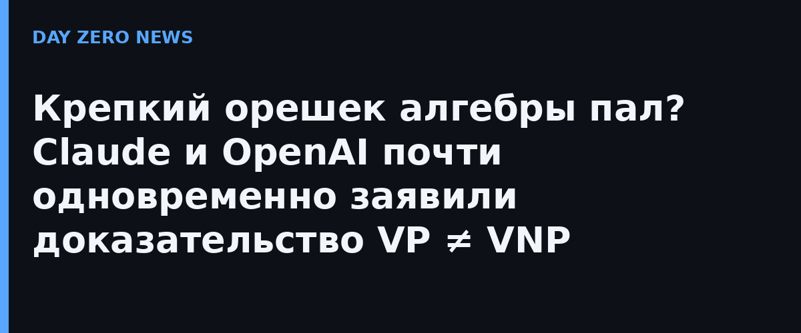

Лесли Валент в 1979 году определил два класса сложности для арифметических цепочек: VP — полиномы, которые считаются схемой полиномиального размера, и VNP — те, что компактно описываются, но могут считаться гораздо дольше. Его гипотеза VP ≠ VNP — алгебраическое «родственник» знаменитой P vs NP. Классический тест-кейс — постоянная матрицы (permanent): у определителя есть эффективные схемы, Валент предположил, что у постоянной — нет. Если доказательство верно, падает один из главных барьеров на пути к пониманию пределов эффективных вычислений. Важный нюанс: P vs NP от этого по-прежнему остаётся открытой задачей.
Anthropic опубликовала 70-страничную статью, где автором числится Claude, а текст и формализация тоже написаны ИИ-моделями; доказательство проверено Lean и независимо разработанным проверщиком nanoda, формализация на Lean 4 занимает десятки тысяч строк и лежит в открытом репозитории formal-math. OpenAI выпустила 30-страничную работу через несколько часов — при этом отдельного официального анонса у OpenAI нет: результат всплыл строкой в журнале изменений, датированной 6 ноября. Кто кого обогнал — неясно: даты самих прорывов обе компании не раскрывают.
Lean подтверждает логическую корректность цепочки, но машина не проверяет, что формальное утверждение — это ровно та гипотеза, которую имели в виду. Ни один человек-математик обе работы пока не просмотрел. Свежий прецедент вдохновляет: на прошлой неделе формальное доказательство гипотезы Римана, полученное математиком Anthropic Левентом Альпёге с помощью Claude, сообщества Lean FRO и Mathlib независимо признали корректным — но и оно сначала висело без человеческой проверки. Теперь у теории сложности новая проблема: доказательств уже больше, чем экспертов, способных их переварить.
Если результаты выдержат аудит, это первое подтверждение того, что ИИ-модели закрывают открытые задачи четвертьвековой давности — и делают это почти синхронно у конкурирующих лабораторий. Найти доказательство, машинно его проверить и понять его головой — три разные задачи, и именно последняя сегодня в дефиците.